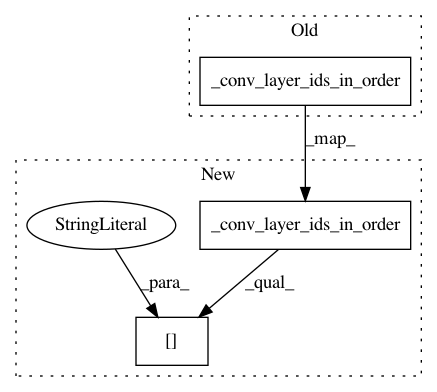

534a56bb2f790e17160586ed8a72b88d37de9c5a,autokeras/graph.py,Graph,skip_connection_layer_ids,#Graph#,569
Before Change
return self._conv_layer_ids_in_order() + self._dense_layer_ids_in_order()[:-1]
def skip_connection_layer_ids(self):
return self._conv_layer_ids_in_order()
After Change
return self._conv_layer_ids_in_order()[:-1] + self._dense_layer_ids_in_order()[:-1]
def skip_connection_layer_ids(self):
return self._conv_layer_ids_in_order()[:-1]
In pattern: SUPERPATTERN
Frequency: 4
Non-data size: 3
Instances
Project Name: jhfjhfj1/autokeras
Commit Name: 534a56bb2f790e17160586ed8a72b88d37de9c5a
Time: 2018-05-21
Author: jin@tamu.edu
File Name: autokeras/graph.py
Class Name: Graph
Method Name: skip_connection_layer_ids
Project Name: keras-team/autokeras
Commit Name: 534a56bb2f790e17160586ed8a72b88d37de9c5a
Time: 2018-05-21
Author: jin@tamu.edu
File Name: autokeras/graph.py
Class Name: Graph
Method Name: wide_layer_ids